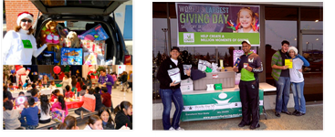

A dedication to good health and good nutrition is the cornerstone of Vi, but good works are at the heart of everything we do.
From the beginning, Vi founders were committed to making a difference, championing important causes that people care deeply about. And so Vi-Cares was born—a broad philanthropic platform that brings Vi Promoters, Customers and employees together to support a range of programs, partners and causes that make a positive impact in the lives of children and families. Reaching out wherever we can, Vi-Cares allows us to share our success with those less fortunate through charitable giving, community service and grassroots initiatives. Questions? Please contact us at giving@Vi.com
When you submit your PROJECT 10 results (either lose 10 lbs or add 10 lbs of lean muscle!) we’ll donate 30 Vi-Shape® Nutritional Shake meals to a child in need, through PROJECT 10 Kids. That’s a whole month of nutritious breakfast, lunch or snack options that will put an at-risk, overweight or obese child on the path to a healthier life. When you lose, they win—now through Vitality!
HOW IT WORKS
1. You lose 10 lbs., or add 10 lbs. of lean muscle, through Project 10. Then submit your results at enter.vi.com.
2. Vi donates 30 Vi-Shape® shake meals to an at-risk or obese child in the United States or Canada. Plus we’ll keep donating every time you lose another 10 lbs. and submit a new “i LOST it.” or “i BUILT it.” video!
3. You receive an “i LOST it.” or “i BUILT it.” t-shirt with “i Sponsored a Child to get Healthy” on the back
ALREADY LOST 10 LBS?
We’ll donate for you, too! Vi will give 30 shake meals for every person who has already submitted successful Project 10 results. That’s a whole month’s worth of meals for a child in need thanks to you and PROJECT 10 Kids.
TWO WAYS TO HELP
At least half the children in America are overweight, obese, malnourished, or victims of nutritional deficiencies that put their lives at risk. Limited options and bad choices are threatening the health of our children and the future of our world. The need for good nutrition has never been greater. And giving it has never been easier.
Vi offers two ways to give the gift of good nutrition to a nutritionally-deficient child in your community.
LOSE 10 lbs—or add 10 lbs of lean muscle—through Project 10, and Vi will donate 30 shake meals on your behalf to an obesity clinic or food and meal program that helps at-risk children. (If you submit your Project 10 results after May 15, 2013, you can choose your own charity from more than 180 Vi Charity Partners, using the Vi-Net® drop-down Charity Choice menu.)
DONATE 30 kid-sized shakes through the Vi-Community Challenge, and Vi will match you shake for shake, doubling your gift to 60 kid-sized shake meals for an at-risk child. Or donate Nutra-Cookies™, and we’ll match you cookie for cookie.
TAKE ME TO THE COMMUNITY CHALLENGE SHOP CART

Vi-Cares’ signature giving program is the Vi-Community Challenge, a community outreach program that allows anyone to donate Vi Vi-Shape® Nutritional Shake Mix meals to children and families who lack the means to get the nutrition they need.
Through our Matched Giving Program, Vi matches donations meal for meal, without limit, doubling the impact of every donation. Working with more than 145 food banks and youth programs, as well as disaster relief efforts, the Vi Community has donated more than two million shake meals to feed children in need throughout the United States and Canada.
With your help, we can feed millions more.
Feeding a child does more than eliminate hunger. It changes lives... gives hope... and shapes the future. If you know of a children’s charity or food bank that could use our help, please let us know at giving@Vi.com.
THE GREAT COOKIE GIVEAWAY

Our first Vi-Cares initiative honored National Hunger Awareness Month by donating a total of 510,880 Nutra-Cookies to West Virginia’s Huntington Area Food Bank.
Members of the Vi-Community were on-site when 420,000 Nutra™-Cookies were donated on a single day, ultimately awarding Vi with the world record by Guinness World Records™. More importantly, the mountain of Vi Nutra-Cookies gave healthy “mini meals” to more than 97,000 nutritionally deprived individuals in 17 high-need counties.

A MILLION MOMENTS OF GIVING
Vi-Cares declared December 15, 2012 The World’s Largest Giving Day.
The spirit of giving turned into acts of giving as Vi challenged people everywhere to give back in any way they could to anyone who needed it. Countless lives were touched as thousands inspired thousands more to create a million moments of giving and caring.
